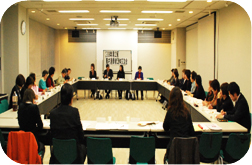

|
＜さいたま市消団連＞
来年度５月の消費生活月間については、市民と行政の交流ができるよう企画中。
＜狭山市消団連＞
来年２月の講演会では消費者庁とその関わり方について消費生活アドバイザーを講師に学ぶ予定。消費者市民力の時代、行動を進めたい。
＜西部地区消費者団体活動推進世話人会＞
川越の消費者支援センターの管内にある15団体で構成。活動の内容について、定例会で話し合っています。
＜朝霞市くらしの会＞
市から事業に対して補助金が支給される。不足分については、市民祭りやバザーの収入を充てています。
＜桶川市くらしの会＞
消費生活展でクイズを行ったが、「消費者と契約」について疎い人が意外と多かった。広報に掲載の｢くらしのワンポイント｣では、自分たちなりに知りたいことを調査している。
＜久喜市くらしの会＞
市民祭りで環境問題の啓発活動を実施。料理教室は農業関係者と連携。歌謡ククラブのチャリティー発表会では収益を20年来社協に寄付。
＜くまがやくらしの会＞
めぬまくらしの会とともに存続。産業祭や消費生活展でバザーを実施。もやしの工場見学、料理教室、生活展での発表と活動をつなげた。夏休み親子消費者教室見学会を企画。
＜白岡町くらしの会＞
消費生活セミナーで、振り込め詐欺について学習。｢健康体操｣は、寝たきり予防にボランティアによる筋トレやボール運動。ふるさと祭りではうどん･そばを500食販売。
＜杉戸町くらしの会＞
「例年にならって･･･」でなく魅力のある活動にしたい。手芸をメインに活動。端布、古着を雛人形、ポーチなどに加工。坂東真理子さんを講師に講演会を開催。
＜鳩ヶ谷市くらしの会＞
地元企業と一緒に開発した「焼きうどんソース」を、コミュニティ祭りなどで提供。市と商工会で販売。商品研究として廃油せっけんを製作。今年度は、消費生活展を復活して行いたい。若い人に足を運んでほしい。
＜NPO法人埼玉消費者被害をなくす会＞
今年度のアンケート調査「めやすばこ」では、通信販売についての被害情報収集活動を行い、現在1000枚ほど回収しました。
＜埼玉県地域婦人会連合会＞
第44回くらしの教養大学は5講座あり、3日間皆勤参加者が18人もいた。2009年フォーラムサラは「絆」をテーマに開催。
＜埼玉県消費者団体連合会＞
全国消団連に加盟しており、役員も担う。埼玉消団連の幹事団体は現在７団体。このような交流会を県内で行っているのは埼玉だけです。
|